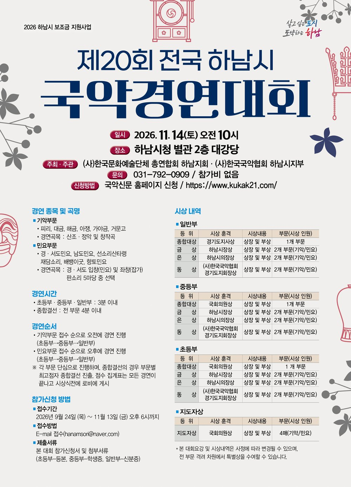
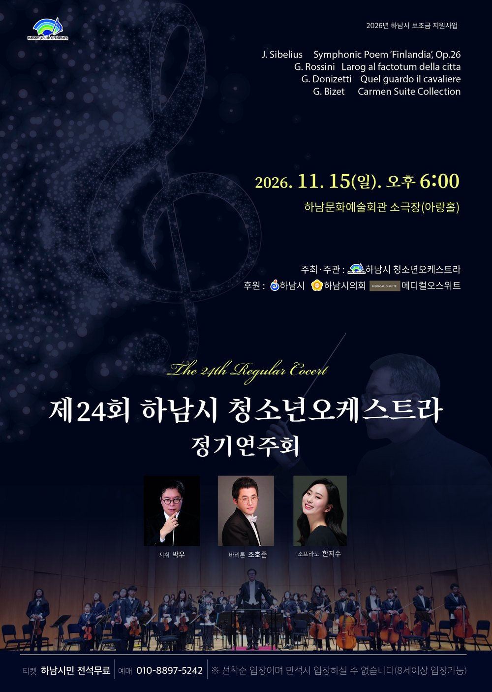
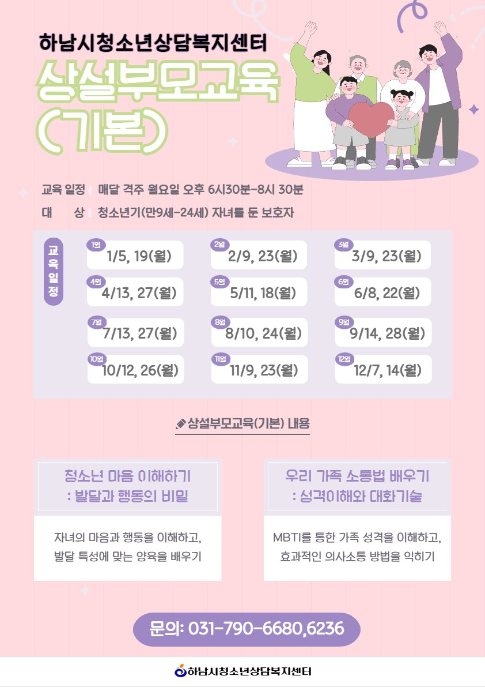

68호 | 2026년 10월 29일 발행
📌 이번 호 주요 목차
 우리동네 국회의원 이광재
우리동네 국회의원 이광재
📝 현장일지
이광재의원, 최휘영 문체부 장관 만나 "검단산~당정뜰~미사섬, 하남 강변을 '문화·건강 벨트'로"
• 하남시립합창단 단원들을 만난 데 이어 최휘영 문화체육관광부 장관과 면담
• 하남을 '문화·예술·체육이 강한 도시'로 만드는 구상 추진 중
• 검단산부터 당정뜰, 미사섬까지 하남 강변을 잇는 '문화·건강 벨트' 조성 구상 설명
• 벨트 조성에 국가 투자를 끌어오기 위한 물밑 노력 이어가
• 하남을 '문화·예술·체육이 강한 도시'로 만드는 구상 추진 중
• 검단산부터 당정뜰, 미사섬까지 하남 강변을 잇는 '문화·건강 벨트' 조성 구상 설명
• 벨트 조성에 국가 투자를 끌어오기 위한 물밑 노력 이어가
📌 출처: 이광재 공식 네이버 블로그
📝 현장일지
이광재의원, 이소영 중기부 장관에 "덕풍시장·신장시장 각별히 지원해 달라"
• 이소영 중소벤처기업부 장관과 만나 중소기업·혁신벤처 생태계 성장 현안 논의
• 민주당 메가성장 전략이 대기업 중심을 넘어 2·3·4차 벤더까지 아우르는 상생 생태계로 이어져야 한다는 데 공감
• 하남 덕풍시장과 신장시장에 대한 각별한 지원 요청
• 현안을 깊이 파악한 이 장관의 앞으로의 행보에 기대 표시
• 민주당 메가성장 전략이 대기업 중심을 넘어 2·3·4차 벤더까지 아우르는 상생 생태계로 이어져야 한다는 데 공감
• 하남 덕풍시장과 신장시장에 대한 각별한 지원 요청
• 현안을 깊이 파악한 이 장관의 앞으로의 행보에 기대 표시
📌 출처: 이광재 공식 네이버 블로그
📰 언론보도
[뉴시스] 이광재의원, '어린이집 급간식비 격차해소 정책토론회' 공동 주최… 보육교직원 400여 명 한자리에
이광재 국회 예산결산특별위원장이 28일 국회도서관 대강당에서 열린 '어린이집 급간식비 격차해소 정책토론회'에서 인사말을 했습니다. 토론회는 이 위원장과 예결위 정태호 간사, 교육위 고민정 간사 등 여야 의원들이 공동 주최했고, 서울·경기·인천 보육교직원 400여 명이 참석했습니다. 참석자들은 사는 지역이나 이용 기관에 따라 달라지는 아이들 급식·간식비 지원 격차를 줄이고, 국가 차원의 적정 기준을 마련해 보육료와 따로 지원해야 한다는 의견을 나눴습니다.
📌 출처: 뉴시스 (고범준 기자) · 베이비뉴스
📰 언론보도
[헤럴드경제] 이광재의원실 등 공동 주최 '코인 엑소더스' 국회 토론회 11월 2일… 가상자산 과세체계 짚는다
당정이 28일 내년 1월로 예정된 가상자산 과세의 추가 유예 여부를 확정하지 않고 제도 보완 과제를 더 점검하기로 하면서, 업계에서는 유예에 무게가 실렸다는 평가가 나옵니다. 업계는 다음 달 2일 이광재·민병덕·박민규·이강일 의원실과 디지털자산정책포럼이 공동 개최하는 '코인 엑소더스, 더 이상 방치해서는 안 된다' 토론회에 주목하고 있습니다. 토론회에서는 양도·대여소득 구분, 스테이킹·에어드롭 과세 기준, 손실 이월공제, 해외 거래 세원 파악 문제 등을 다룹니다.
📌 출처: 헤럴드경제 (유혜림·경예은 기자)
📰 하남 지역 주요 뉴스
🚌 교통
감일~둔촌역 마을버스 8번, 12월부터 4대→6대 증차… 배차간격 15분→12분
하남시가 출퇴근 시간대 혼잡이 심한 마을버스 8번(감일교차로~둔촌역 3번 출구) 운행 차량을 4대에서 6대로 늘리기로 하고 서울시로부터 증차 승인을 받았다고 28일 밝혔습니다. 올해 3월 방아다리길 개통 뒤 이용객이 늘면서 출퇴근 시간대 재차율이 최대 233%까지 치솟았습니다. 시·도 간 노선 증차에 신중하던 서울시는 친환경 차량 도입을 조건으로 승인했습니다. 시는 12월부터 증차 운행을 시작할 계획이며, 배차간격은 15분에서 12분으로 줄어듭니다. 이현재 하남시장은 시민 안전을 최우선으로 승인을 이끌어냈다고 밝혔습니다.
📌 출처: 웹이코노미 (박창식 기자) · 경인매일
📚 문화/도서관
위례도서관 '꿈꾸는 그림자 동아리', 창작 그림자극 '상자빌라'로 전국대회 무대 오른다
하남시 위례도서관의 '꿈꾸는 그림자 동아리'가 회원 9명이 직접 기획·창작한 그림자극 '상자빌라-우리의 이웃 이야기'로 전국대회 공연팀에 뽑혔습니다. 작품은 11월 3일 국립중앙도서관 국제회의장에서 열리는 전국대회에서 선보입니다. 문화체육관광부와 한국도서관문화재단의 '도서관 문화예술 동아리 활동 지원' 사업의 하나로, 버려진 사과 상자가 따뜻한 보금자리로 다시 태어난다는 상상에서 출발해 한 빌라에 사는 이웃들의 일상과 갈등을 빛과 그림자로 그려냈습니다. 이현재 하남시장은 회원들이 함께 노력해 얻은 소중한 성과라고 밝혔습니다.
📌 출처: 국제뉴스 (강정훈 기자)
💬 하남 맘카페 HOT 이슈
이번 주 하남 지역 맘카페(미사맘스클럽, 정다운 감일맘, 하강맘, 교산우리동네 등)에서 많이 오르내린 HOT 이슈 TOP 3입니다.
1️⃣ [교통] "교산은 2029년 입주인데 지하철은 2032년?"… 철도 지연 소식에 출퇴근·통학 걱정
현황: 이번 주 여러 카페에서 교통 이야기가 이어졌습니다. 교산신도시 첫 입주는 2029년 6월인데 송파하남선은 2032년에야 개통될 전망이라 그 사이 교통 대책이 필요하다며 하남시가 정부와 LH에 '선교통·후입주'를 요구했다는 소식이 공유됐습니다. 강동하남남양주선(9호선 연장) 2·5공구가 각각 네 차례 유찰돼 경기도와 도의회가 계약 방식을 논의했다는 기사도 퍼졌습니다. 하남미사교산4050 카페에는 원도심·미사와 위례·감일을 오가는 고등학교 셔틀버스 노선과 시간표를 어디서 볼 수 있는지 묻는 글이, 교산우리동네에는 마을버스 노선 조정으로 단지 정류장이 빠진다는 안내문을 봤다는 글이 올라왔습니다.
💡 주민 포인트: 감일교차로~둔촌역을 오가는 마을버스 8번은 12월부터 4대에서 6대로 늘어나 배차간격이 15분에서 12분으로 줄어듭니다. 노선·정류장 변경은 정류장 안내문과 하남시 누리집 공지에서 미리 확인하세요.
💬 주민 반응: 입주보다 철도 개통이 늦어지는 데 대한 걱정과 함께, 그 전까지 버스·셔틀 같은 대책을 구체적으로 알고 싶다는 반응이 많았습니다.
📌 출처: 네이버 카페 (교산신도시 부동산정보, 3기신도시에 내집마련하기, 하남미사교산4050, 교산우리동네)
2️⃣ [독감 접종] "독감주사 싸게 맞는 곳 있나요?"… 가격 비교·저녁 접종·소아 백신 문의 이어져
현황: 본격적인 독감 철을 앞두고 접종 병원을 묻는 글이 쏟아졌습니다. 미사맘스클럽에는 식구가 6명이라 저렴한 곳을 찾는다는 글, 미사의 한 의원이 지금도 2만 5천 원에 접종하는지 묻는 글, 고등학생 자녀 시간에 맞춰 다음 날 접종할 수 있는 병원을 찾는 글이 올라왔습니다. 특정 제조사 백신을 놓는 소아과를 찾는 질문도 있었습니다. 정다운 감일맘에는 "작년보다 가격이 많이 올랐다"며 성인 독감주사가 저렴한 곳을 묻는 글이, 아이품애에는 올해는 3가 백신을 맞아도 된다고 해서 맞고 왔다는 후기가 공유됐습니다. 국가건강검진을 받으면서 독감주사를 할인받았다는 정보와 주민센터에 어르신 무료접종 일정이 붙었다는 소식도 나왔습니다.
💡 주민 포인트: 생후 6개월~13세 어린이, 임신부, 만 65세 이상 어르신은 국가예방접종 무료 대상입니다. 가까운 위탁의료기관과 접종 일정은 질병관리청 '예방접종도우미'(nip.kdca.go.kr)에서 확인하고, 퇴근 후 접종할 계획이라면 예방접종 접수 마감 시간을 미리 전화로 물어보세요.
💬 주민 반응: 작년보다 가격이 올랐다는 반응과 함께, 할인 정보나 저렴한 병원을 서로 알려 주는 댓글이 이어졌습니다.
📌 출처: 네이버 카페 (미사강변도시 미사맘스클럽, 정다운 감일맘, 아이품애, 교산우리동네)
3️⃣ [가을 나들이] "나무고아원 단풍 들었을까요?"… 단풍 근황·선셋 명당 공유, 호수공원 날파리 주의보도
현황: 가을 나들이 장소를 묻고 답하는 글이 늘었습니다. 미사맘스클럽에는 하남 나무고아원에 단풍이 들었는지 묻는 글과 동네에서 노을이 예쁜 '선셋 명당'을 찾는 글이 올라왔습니다. 슬기로운 위례생활에는 나무고아원 단풍이 아직 완연하진 않지만 충분히 예쁘다는 후기가, 하강맘에는 이번 주말이면 단풍을 제대로 볼 수 있겠다는 글이 공유됐습니다. 이웃 지역 맘카페에도 사람이 많지 않아 한적하게 가을을 즐겼다는 미사한강공원 나들이 후기가 올라왔습니다. 한편 미사호수공원을 걷다가 날파리가 너무 많아 얼굴과 옷에 잔뜩 붙었다는 '주의' 글도 눈길을 끌었습니다.
💡 주민 포인트: 나무고아원·미사한강공원·당정뜰 등 강변 산책길은 무료로 가을을 즐기기 좋은 곳입니다. 해가 지면 기온이 크게 떨어지니 아이 겉옷을 챙기고, 물가 산책로에서는 날벌레에 대비해 모자와 물티슈를 준비하세요.
💬 주민 반응: 단풍이 아직 완연하진 않아도 충분히 예쁘다며 이번 주말 단풍 구경을 기대하는 글이 많았습니다.
📌 출처: 네이버 카페 (미사강변도시 미사맘스클럽, 슬기로운 위례생활, 하강맘, 구리 남양주맘)
🎭 ALL IN 하남라이프
2026년 10월 29일 기준 한눈에 보는 하남시 최신 문화·행사·교육 안내 가이드
🥁 11.14(토) 10:00 | 하남시청 별관 2층 대강당 · 참가비 없음
[경연] 제20회 전국 하남시 국악경연대회 — 초등부·중등부·일반부 참가자 11월 13일까지 모집
"갈고닦은 우리 소리, 하남에서 뽐내 보세요"
올해로 20회를 맞는 전국 하남시 국악경연대회가 열립니다. 기악과 민요 두 부문에서 초등부·중등부·일반부로 나눠 실력을 겨룹니다.
🗓 일시: 2026년 11월 14일(토) 오전 10시 (오전 기악부문, 오후 민요부문)
🎼 종목: 기악(피리·대금·해금·아쟁·가야금·거문고) / 민요(경·서도민요, 남도민요, 선소리산타령 등)
⏱ 경연시간: 3분 이내 (종합결선 4분 이내)
🏆 시상: 일반부 종합대상 경기도지사상, 초등·중등부 종합대상 국회의원상, 금상 하남시장상 등
✅ 신청: 9월 24일(목) ~ 11월 13일(금) 오후 6시, 이메일(hanamsori@naver.com) 또는 국악신문 누리집 · 참가신청서와 등본·학생증·신분증 등 제출
☎️ 문의: (사)한국국악협회 하남지부 031-792-0909
올해로 20회를 맞는 전국 하남시 국악경연대회가 열립니다. 기악과 민요 두 부문에서 초등부·중등부·일반부로 나눠 실력을 겨룹니다.
🗓 일시: 2026년 11월 14일(토) 오전 10시 (오전 기악부문, 오후 민요부문)
🎼 종목: 기악(피리·대금·해금·아쟁·가야금·거문고) / 민요(경·서도민요, 남도민요, 선소리산타령 등)
⏱ 경연시간: 3분 이내 (종합결선 4분 이내)
🏆 시상: 일반부 종합대상 경기도지사상, 초등·중등부 종합대상 국회의원상, 금상 하남시장상 등
✅ 신청: 9월 24일(목) ~ 11월 13일(금) 오후 6시, 이메일(hanamsori@naver.com) 또는 국악신문 누리집 · 참가신청서와 등본·학생증·신분증 등 제출
☎️ 문의: (사)한국국악협회 하남지부 031-792-0909

📌 출처: 하남시 (문화정책과) · (사)한국국악협회 하남지부
🎻 11.15(일) 18:00 | 하남문화예술회관 소극장(아랑홀) · 하남시민 전석무료
[공연] 제24회 하남시 청소년오케스트라 정기연주회 — '핀란디아'부터 '카르멘'까지
"우리 동네 청소년 연주자들의 한 해 결실, 무료로 만나요"
하남시 청소년오케스트라가 스물네 번째 정기연주회를 엽니다. 성악가와 함께하는 오페라 아리아와 귀에 익은 클래식 명곡을 들려줍니다.
🗓 일시: 2026년 11월 15일(일) 오후 6시 ~ 8시
📍 장소: 하남문화예술회관 소극장(아랑홀)
🎶 출연: 지휘 박우 · 바리톤 조호준 · 소프라노 한지수 · 하남시 청소년오케스트라
🎼 곡목: 시벨리우스 '핀란디아', 로시니 '나는 이 거리의 만능일꾼', 도니제티 '기사의 그 눈빛', 비제 '카르멘' 모음곡
🎟 관람: 하남시민 전석 무료 · 선착순 입장(만석 시 입장 불가) · 8세 이상
☎️ 예매: 010-8897-5242
하남시 청소년오케스트라가 스물네 번째 정기연주회를 엽니다. 성악가와 함께하는 오페라 아리아와 귀에 익은 클래식 명곡을 들려줍니다.
🗓 일시: 2026년 11월 15일(일) 오후 6시 ~ 8시
📍 장소: 하남문화예술회관 소극장(아랑홀)
🎶 출연: 지휘 박우 · 바리톤 조호준 · 소프라노 한지수 · 하남시 청소년오케스트라
🎼 곡목: 시벨리우스 '핀란디아', 로시니 '나는 이 거리의 만능일꾼', 도니제티 '기사의 그 눈빛', 비제 '카르멘' 모음곡
🎟 관람: 하남시민 전석 무료 · 선착순 입장(만석 시 입장 불가) · 8세 이상
☎️ 예매: 010-8897-5242

📌 출처: 하남시 (문화정책과) · 하남시 청소년오케스트라
🏛️ 공공기관 소식지
2026년 10월 29일 기준 하남시 공공기관 주요 공고·신청 안내입니다.
🏷️ 하남시 지역경제과 | 착한가격업소 신청·시민 추천
값은 착하게, 서비스는 좋게 — 하남시 '착한가격업소' 안내 (업소 신청·시민 추천)
"우리 동네 착한 가게, 직접 추천해 주세요"
착한가격업소는 저렴한 가격으로 좋은 서비스를 제공하는 가게를 행정안전부 기준에 따라 시가 지정하는 물가안정 모범업소입니다.
🏪 대상: 외식·세탁·목욕 등 서민생활과 밀접한 개인서비스 업소
📝 평가: 인근 상권 대비 가격 수준, 주방·매장·화장실 위생과 청결 등을 평가해 40점 이상이면 지정
⚠️ 제외: 지역 평균가격 초과 업소, 영업 6개월 미만, 지방세 3회 이상 또는 100만 원 이상 체납, 프랜차이즈 가맹점 등
🎁 혜택: 지정서·표찰, 종량제봉투·방역물품 등 물품 지원, 시 누리집·블로그·소식지 홍보, 네이버지도·카카오맵·티맵에 '착한가격업소' 표시
✅ 추천: 행정안전부 착한가격업소 누리집(goodprice.go.kr) → 착한가격업소 추천
☎️ 문의: 하남시 지역경제과 상권지원팀 031-790-6034
착한가격업소는 저렴한 가격으로 좋은 서비스를 제공하는 가게를 행정안전부 기준에 따라 시가 지정하는 물가안정 모범업소입니다.
🏪 대상: 외식·세탁·목욕 등 서민생활과 밀접한 개인서비스 업소
📝 평가: 인근 상권 대비 가격 수준, 주방·매장·화장실 위생과 청결 등을 평가해 40점 이상이면 지정
⚠️ 제외: 지역 평균가격 초과 업소, 영업 6개월 미만, 지방세 3회 이상 또는 100만 원 이상 체납, 프랜차이즈 가맹점 등
🎁 혜택: 지정서·표찰, 종량제봉투·방역물품 등 물품 지원, 시 누리집·블로그·소식지 홍보, 네이버지도·카카오맵·티맵에 '착한가격업소' 표시
✅ 추천: 행정안전부 착한가격업소 누리집(goodprice.go.kr) → 착한가격업소 추천
☎️ 문의: 하남시 지역경제과 상권지원팀 031-790-6034
📌 출처: 하남시 (지역경제과 상권지원팀)
👨👩👧 청소년상담복지센터 | 11.9·11.23·12.7·12.14(월) 18:30~20:30 · 무료
"아이와 대화가 잘 안 될 때" — 하남시청소년상담복지센터 상설부모교육(기본) 참여자 모집
"사춘기 우리 아이, 마음부터 이해해요"
아이의 마음이 궁금하거나 대화가 잘 안된다고 느끼는 보호자를 위한 무료 부모교육입니다. 매달 격주 월요일 저녁에 열리며, 올해 남은 일정은 4회입니다.
🗓 남은 일정: 11월 9일·23일, 12월 7일·14일 (월) 오후 6시 30분 ~ 8시 30분
👥 대상: 청소년기(만 9~24세) 자녀를 둔 보호자
📖 내용: ① 청소년 마음 이해하기 — 발달과 행동의 비밀 ② 우리 가족 소통법 배우기 — MBTI로 가족 성격 이해하고 대화 기술 익히기
💰 교육비: 무료 (매월 선착순 마감)
✅ 신청: 전화로만 접수 031-790-6680 (문의 6680·6236)
아이의 마음이 궁금하거나 대화가 잘 안된다고 느끼는 보호자를 위한 무료 부모교육입니다. 매달 격주 월요일 저녁에 열리며, 올해 남은 일정은 4회입니다.
🗓 남은 일정: 11월 9일·23일, 12월 7일·14일 (월) 오후 6시 30분 ~ 8시 30분
👥 대상: 청소년기(만 9~24세) 자녀를 둔 보호자
📖 내용: ① 청소년 마음 이해하기 — 발달과 행동의 비밀 ② 우리 가족 소통법 배우기 — MBTI로 가족 성격 이해하고 대화 기술 익히기
💰 교육비: 무료 (매월 선착순 마감)
✅ 신청: 전화로만 접수 031-790-6680 (문의 6680·6236)

📌 출처: 하남시청소년상담복지센터
© 2026 우리동네 진짜일꾼 이광재